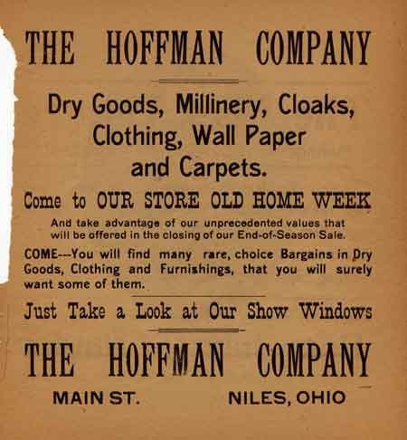
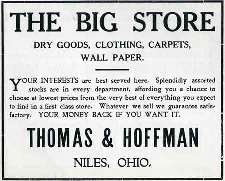
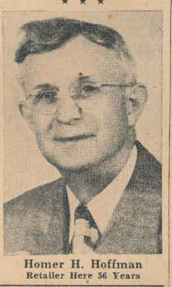

Ward-Thomas Museum


The H. H. Hoffman Department Store in Niles Ohio
Ward — Thomas
Museum
Home of the Niles Historical Society
503 Brown Street Niles, Ohio 44446
Click here to become a Niles Historical Society Member or to renew your membership
Click on any photograph to view a larger image, click on image again to zoom into photograph.
|
Thomas & Hoffman Store. ca 1905 Award winning window display by Homer Hoffman. Awarded by Printzess Company of Cleveland, Ohio. |
The H. H. Hoffman Story. Those of you who have watched Niles
develop may well recall the circumstances which led to the founding
of the present day Homer H. Hoffman Co. Many newcomers
who are familiar with the store and its services will be interested
in this brief glance backward to the turn of the century. When Mr. Thomas withdrew from the business in 1900 , to go into a new adventure – manufacturing steel sheets – Ira Thomas and Henry H. Hoffman formed the Thomas and Hoffman Co. In 1902, Homer H. Hoffman joined the sales staff of the organization. It was 1905 when Thomas and Hoffman Co. moved into a newly constructed building at 33 South Main Street, the site of its present location. When Ira Thomas resigned from the firm in 1908, it was incorporated as the H.H. Hoffman Co., with Henry H. Hoffman, Homer H. Hoffman, and Frank O. Hoffman as operators. This company remained in continuous operation until 1926 when Frank O. Hoffman left the organization.
|
|
| |
||
|
Selling Hickok Belts: unknown and George Griffiths. Wallpaper Department: Jesse Beil and unknown woman. |
Henry H. Hoffman retired on August 1, 1944 and at that time Homer H. Hoffman purchased the assets of the corporation. The firm then became the Homer H. Hoffman Co. operating as a private business until September 1 ,1948 on which date it was incorporated. Today this establishment is operating with Homer H. Hoffman, President-Treasurer, and M.K. Kiracofe, Secretary. The Homer H. Hoffman Co. now maintains a staff of approximately twenty employees. The unusual record in service achieved by members of this staff is a tribute to the policies and consideration of the company over the period of many years. Among these employees are five whose combined years of outstanding service total 133 years. Julia Gresham has been with the store for 37 year; George Griffiths, 29 years; Alice Bixler, 25 years; Lula Shaffer, 22 years and Dora Williams, 20 years. Many members of the families in Niles and surrounding communities have patronized the store for three or four generations. Throughout the many years this company has been servicing Niles. It has been the policy of the management to offer their customers quality merchandise from nationally known manufacturers; to offer friendly, personal service. As a matter of fact, Homer H. Hoffman Co., still takes the same pride in fair and honest dealings, as well as high quality merchandise, which was the characteristic of original W.A. Thomas and Bros. Store. The Hoffman Store used a special
method to take a customer’s payment to the accounting
department where change and a receipt would be generated. Throughout
the store were suspended overhead twine track and pulleys that
were in constant motion and the clerk would attach a small carrier
car which then traveled the wires to the accounting Department.
The change and receipt then was sent back over these wires to
the register where the sale was finalized. Young children would
stare in amazement as they watched the metal cars traversing
the different departments of the Hoffman Store. D. L. Evans (Written in 1950's or very early 1960's) |
|
| |
||
A Side Story: The Hoffman Store used a special method to take a customer’s payment to the accounting department where change and a receipt would be generated. Throughout the store were suspended overhead wire track and pulleys that were in constant motion and the clerk would attach a small carrier car which then traveled the wires to the accounting Department. The change and receipt then was sent back over these wires to the register where the sale was finalized. Young children would stare in amazement as they watched the metal cars traversing the different departments of the Hoffman Store. James Kiracofe, son of M.K Kiracofe, mentioned that the “wire” for this pulley system was actually twine that was easily repaired whenever it snapped from the friction of the pulleys. |
||
| |
||
 Advertisement Celebrating Old Home
Week. |
Store front window display from 1939. |
 Thomas & Hoffman Department Store Advertisement. ca 1906 |
 Homer H. Hoffman |
Homer H. Hoffman, Niles Merchant, Dies. Homer H. Hoffman, 80, a prominent department store merchant in Niles for 56 years, died at 1:15 this morning in Trumbull Memorial Hospital of a coronary ailment. Mr. Hoffman had been actively engaged in his business, the Homer H. Hoffman Company, up to the time of his death. Born February 14, 1878, in Knotts Twp. Stark County, he was the son of Henry and Alice Bandy Hoffman. Following his graduation from Salem Business College, Mr. Hoffman began business in that city, moving to Niles in 1902. He began an association with the Thomas & Hoffman Company in 1902 which has continued under the name of Homer H. Hoffman Company to the present day. When the company was incorporated, Homer H. Hoffman held the office of its president and treasurer. He was associated with the Mahoning Lodge 394 F&A.M. Knights Templar 79, Niles Commandary, a 50-year member of the Odd Fellows Lodge, Rotary Club. Active in Liberty Bond drives during World War I and many other civic projects, Mr. Hoffman was also a past president of the Retail Merchants Division of the Niles Chamber of Commerce. He was a member of the First Presbyterian Church. His first wife was Edith Wagstaff,
who died in 1947. He is survived by his wife, Alice Kirk
Hoffman, whom he married October 12, 1954; two daughters,
Mrs. Melville (Kathryn) Kiracofe, Niles and Mrs.
Edwin (Mary Louise) Wenger of Detroit; four grandchildren;
two brothers Clayton of Alliance, Ohio and Keith
of Beloit, Wis. and one sister, Mrs. Allan West of
Damascus, Ohio also survive. |
|
|
|
||
{kind=link}
{kind=link}
{kind=link}
{kind=link}
{kind=link}
{kind=link}
{kind=link}